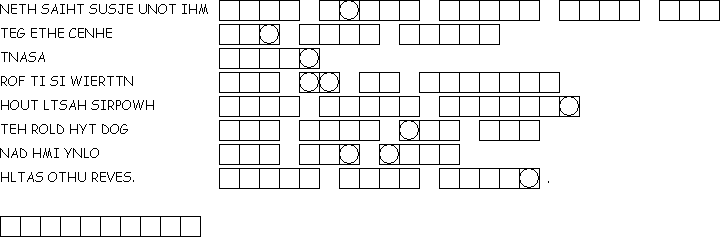

This week's lessons: Genesis 2:15-17; 3:1-7 , Psalm 32 , Romans 5:12-19 , Matthew 4:1-11
This
week's lessons: Genesis
2:15-17; 3:1-7 , Psalm
32 , Romans
5:12-19 , Matthew
4:1-11
Middle-School Pew-work
What do you believe to be the relationship between God and Satan? _____________________________ ____________________________________________________________________________________ ____________________________________________________________________________________ ____________________________________________________________________________________ ____________________________________________________________________________________
Is Satan as powerful as God? ____________________________________________________________ ____________________________________________________________________________________ ____________________________________________________________________________________ ____________________________________________________________________________________ ____________________________________________________________________________________
Where is it in your life that you
find the biggest temptation? ___________________________________
____________________________________________________________________________________
____________________________________________________________________________________
____________________________________________________________________________________
____________________________________________________________________________________
____________________________________________________________________________________
Unscramble
each of the clue words. Take the letters that appear in circles and
unscramble them for the hidden word:
